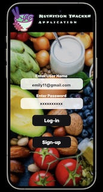
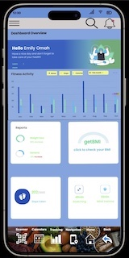
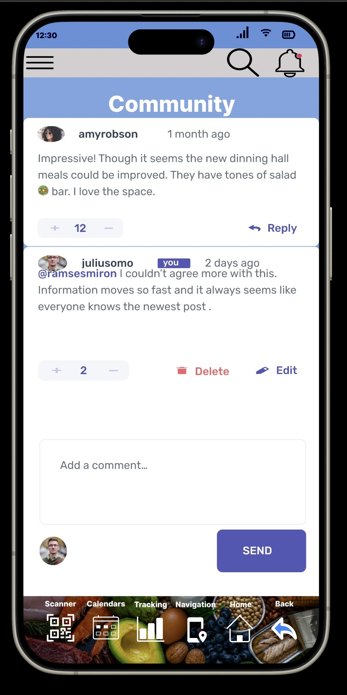

Nutritional Tracking App: Development Insights
Nutritional Tracking App: Development Insights
Idea Generation and Development Phases
This project aimed to create a comprehensive nutritional tracking app tailored for college students, focusing on meal tracking, diet planning, and weight management.
Initial Concept
- Meal Tracker: Allows users to log meals and track calories.
- Diet Planning: Provides tailored eating plans based on user goals.
- Weight Tracker: Monitors weight changes and progress over time.
Integration and Enhancement
The integration of these features into a single application enhances the user's understanding of diet and nutrition and facilitates efficient health management.
Addressing Challenges
The main challenge was balancing the simplicity of the app with the need to provide comprehensive nutritional information. We achieved this by:
- Designing an intuitive user interface that simplifies complex data.
- Providing educational resources within the app to help users make informed decisions.
- Implementing customizable settings to allow users to adjust the app according to their specific dietary needs.
Prototype and User Feedback
The prototype was developed to test these features, with a focus on user-friendliness and effectiveness in promoting healthy eating habits among students.
View Prototype on FigmaAdditional Resources
Explore more about the development process and user interactions with our project:
Open PDF Project Slideshow PresentationNutritional Tracking App: Development Insights
Main Screen Layout

This screen shows the standard layout of an iPhone with the NutriTrack app icon in the dock.
Login Screen
This screen presents the login interface with fields for username and password.
Dashboard Screen
The dashboard provides an overview of health metrics with graphical representations.
Community Screen

This community interaction page allows users to post comments, reply, and manage their engagement.
Users Screen
A reaffirmation of the Community Screen, showcasing user interaction features.